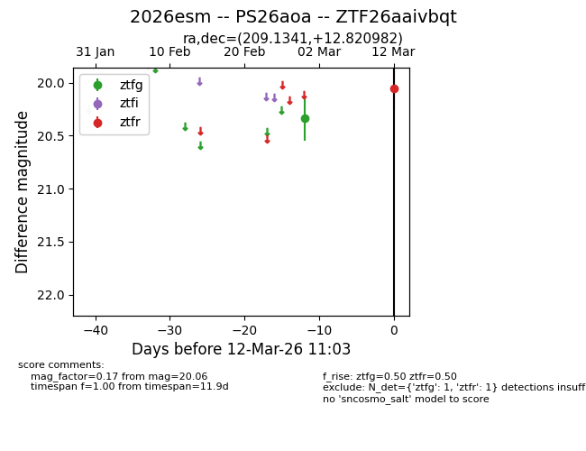
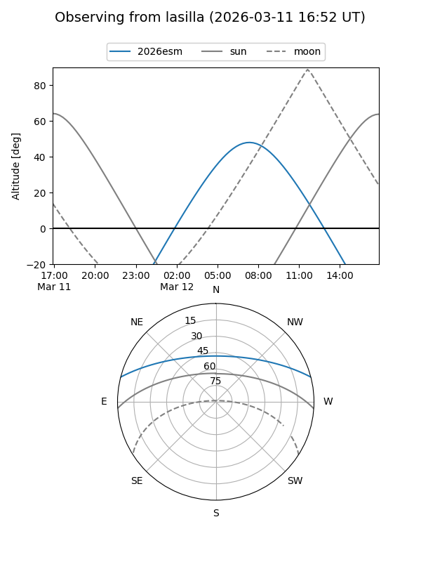
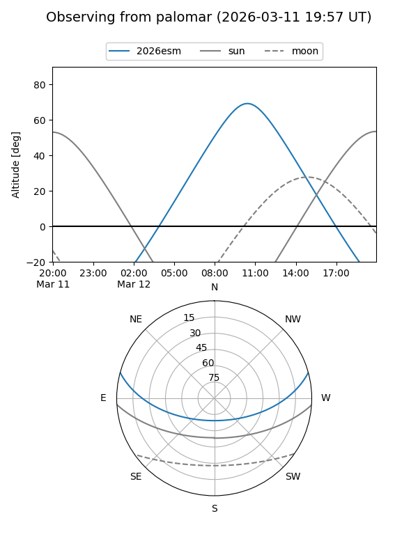
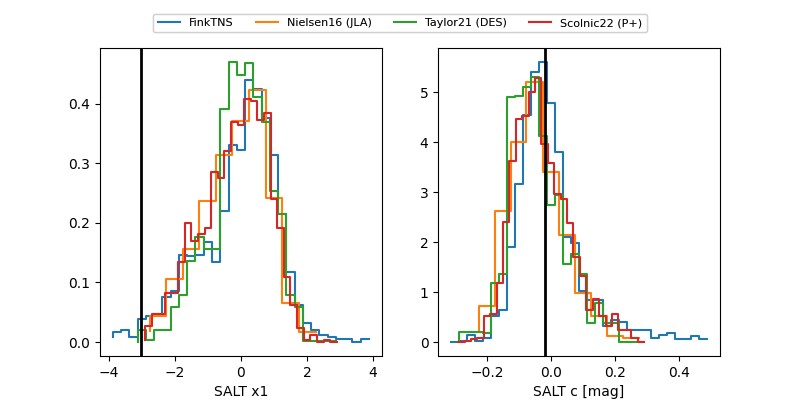

2026esm
Target 2026esm at 2026-03-12 11:05
Aliases and brokers:
FINK: link
Lasair: link
ALeRCE: link
TNS: link
YSE: link
alt names
ZTF26aaivbqt (ztf,fink_ztf)
2026esm (tns,yse)
PS26aoa (panstarrs)
Coordinates:
equatorial (ra, dec) = 209.1341,+12.82098
equatorial (HMS+DMS) = 13:56:32.18,+12:49:15.53
galactic (l, b) = (352.9297,+69.10109)
Flags:
Photometry:
last ztfg=20.34, ztfr=20.06
1 ztfg, 1 ztfr detections
Lightcurve

Visibility


Additional plots
